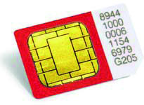
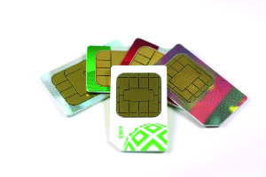
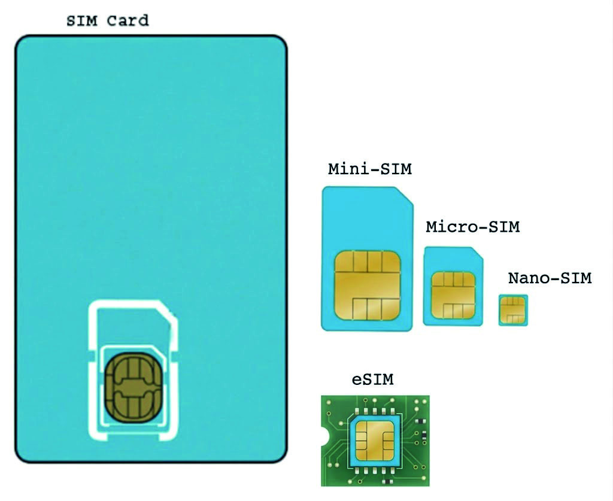
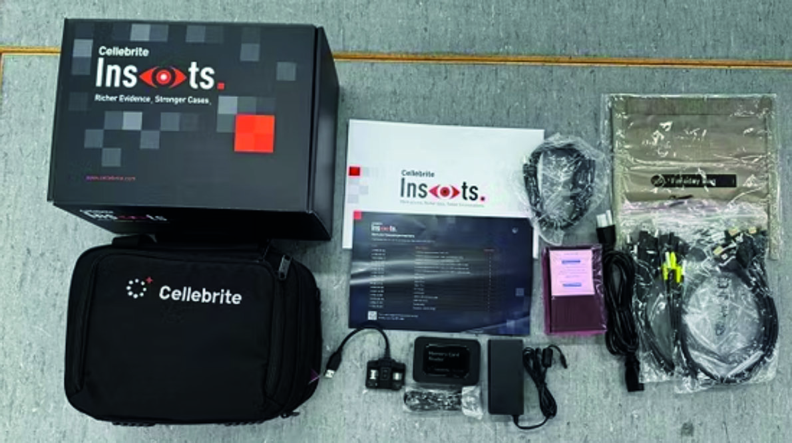
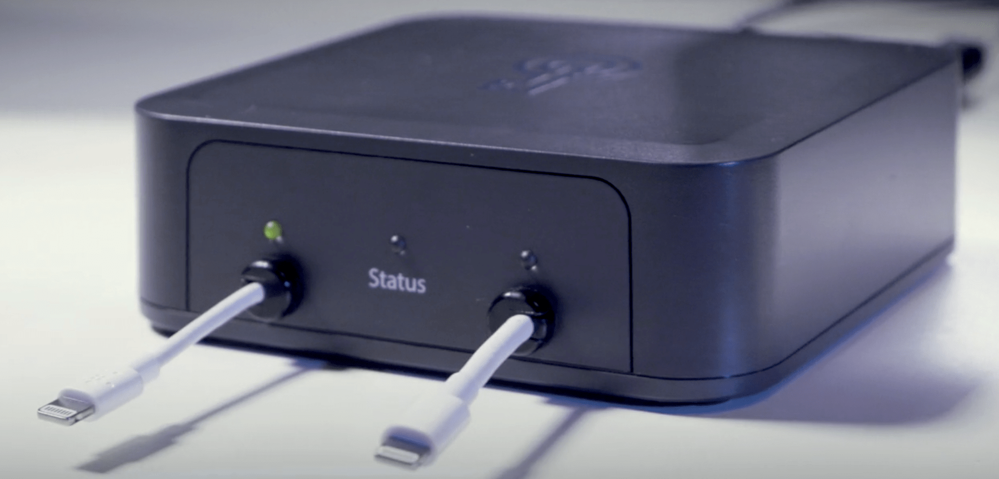

Nesta unidade são apresentados conceitos relacionados aos exames periciais cujos objetivos sejam a extração e a análise de dados existentes em equipamentos computacionais portáteis, como aparelhos celulares, tablets e agendas eletrônicas, GPS e drones. Para estabelecer as diretrizes e padronizar os procedimentos dos exames periciais em aparelhos eletrônicos capazes de se comunicar a uma rede de telefonia móvel, foi publicada a Instrução Técnica 017/2013-Ditec/DPF. Essa IT fornece orientações aos Peritos Criminais sobre como proceder desde o recebimento do material, passando pela análise de viabilidade dos exames, análise pericial e respostas aos quesitos. Além da IT, há o Manual de Perícias em Equipamentos Computacionais Portáteis, que consta nos anexos desta apostila. Neste documento há conceitos e procedimentos importantes para a extração e análise de aparelhos celulares.
O aparelho celular está cada vez mais integrado ao cotidiano das pessoas, com um incessante desenvolvimento tecnológico que oferece a cada dia mais comodidades ao usuário. Como consequência, a necessidade e a complexidade dos exames executados nesses aparelhos vêm aumentando continuamente, acompanhando assim a evolução da tecnologia. Quando foram popularizados no meio dos anos noventa, os aparelhos celulares eram capazes de armazenar apenas alguns contatos de agenda e registros de chamadas. Hoje, um aparelho celular é capaz de armazenar milhares de páginas de texto, de fotos, músicas/gravações e vídeos, além de permitir a utilização de aplicativos antes disponíveis apenas em computadores, como Excel, Word, Outlook, PowerPoint, Navegadores GPS e muitos outros. Os telefones móveis ditos inteligentes (smartphones) tomaram o lugar da agenda eletrônica e do PDA e são hoje utilizados por muitos usuários até mesmo em substituição a notebooks. Por ser um equipamento com funcionalidades semelhantes às de pequenos computadores e ter a capacidade de coletar e armazenar informações extremamente úteis para investigações policiais (como coordenadas GPS, comunicações com outros usuários, acesso a redes sociais, dentre outras), além de estar em constante proximidade com o usuário, os aparelhos celulares assumiram um papel tão ou mais importante que o de desktops e notebooks para as perícias da área de informática. A crescente utilização de dispositivos móveis como meio de comunicação, armazenamento e interação digital transformou esses equipamentos em uma das fontes mais ricas e complexas de prova no contexto de investigações criminais. Diferente de um computador tradicional, o smartphone acompanha o investigado em tempo integral, registrando sua localização, comunicações, hábitos, finanças e rede de contatos. O Perito Criminal deve dominar os principais conceitos relacionados aos sistemas de operação de telefonia para a realização das análises periciais, que serão apresentadas a seguir. As principais tecnologias de comunicação de aparelhos celulares existentes atualmente são: a) CDMA (Code Division Multiple Access): utiliza um número de identificação global único para cada dispositivo móvel chamado de ESN (Electronic Serial Number) ou MEID (Mobile Equipment Identifier). Atualmente, a tecnologia CDMA é praticamente inexistente no Brasil; b) GSM (Global System for Mobile Communications) e iDEN (Integrated Dispatch Enhanced Network): a tecnologia GSM distingue explicitamente a identificação do usuário e do equipamento. Um código chamado IMEI (International Mobile Equipment Identity) é utilizado para identificar unicamente um aparelho celular, enquanto o IMSI (International Mobile Subscriber Identity) é um código de identificação internacional usado pelas operadoras telefônicas para identificar um assinante de serviço móvel pessoal. A tecnologia GSM faz uso de um pequeno cartão inteligente (smart card) chamado de cartão SIM (Subscriber Identity Module), vinculado pelas operadoras de telefonia a uma linha telefônica e pode armazenar dados como números da agenda telefônica e mensagens de texto. O código IMSI do assinante do serviço de telefonia móvel é armazenado no cartão SIM. Os cartões SIM possuem um código de identificação único em todo o mundo conhecido como ICCID (Integrated Circuit Card Identifier). O ICCID possui 20 dígitos e pode estar impresso no próprio cartão.


Figura 16 – Cartões SIM
Atualmente, existem quatro tipos de cartão SIM de tamanhos físicos diferentes disponíveis no mercado: mini, micro, nano e eSIM.

Figura 17 – Diferentes tamanhos de cartões SIM: mini, micro, nano e eSIM.
O cartão eSIM é um microchip soldado diretamente na placa-mãe do dispositivo durante sua fabricação, projetado para receber e armazenar as credenciais da operadora de forma virtual (via software). Assim como os demais cartões SIM, armazena informações dos códigos MSISDN e ICCID relativas ao assinante da operadora. Um telefone celular GSM só entra em operação na rede de telefonia móvel se um cartão SIM contendo um IMSI válido for inserido em um equipamento com um IMEI também válido. Um cartão SIM pode ser utilizado facilmente em vários telefones (com exceção do eSIM, que deve ser importado via software de um aparelho para o outro) e um mesmo usuário pode ter mais de uma linha em um mesmo aparelho.
Este tópico apresenta os passos para o exame e a elaboração de laudo em equipamentos eletrônicos, em especial telefones celulares (incluindo smartphones). São apresentadas também algumas dificuldades que podem ser encontradas.
O primeiro passo em uma análise pericial é a descrição do material submetido a exame. Com a globalização do mercado e o avanço tecnológico, as marcas e modelos de celulares estão em constante atualização, mas a estrutura básica dos aparelhos celulares continua a mesma. O importante neste item do laudo é identificar e descrever, de forma clara, todos os componentes que fazem parte do aparelho examinado e seu estado de conservação, de forma a manter a unicidade do material em questão. Evita-se, dessa forma, sua troca, extravio ou perda. A identificação de forma unívoca é a chave para a conclusão dessa primeira etapa de elaboração do laudo. É importante observar a tecnologia utilizada no modelo do aparelho para que ele possa ser corretamente identificado e descrito. Os números de identificação que devem ser observados para cada tecnologia são:
*#06#no celular.
Os cartões SIM (utilizados pela tecnologia GSM) que estejam presentes no aparelho também devem ser identificados e descritos, devendo ser informado no laudo: a operadora de telefonia do cartão, seu código de identificação (ICCID), o identificador do assinante junto à operadora de telefonia (IMSI) e o MSISDN. É necessário também descrever detalhadamente quaisquer acessórios que acompanhem o telefone, como carregadores e capas protetoras, além da bateria. A figura a seguir apresenta um exemplo de descrição.
TELEFONE CELULAR:
marca: Nokia;
modelo: 7250i;
cor: preta;
IMEI: 331640301585412;
número de série: 0513345IK29MH;
Estado de conservação;
Capas de proteção. CARREGADOR:
marca: Nokia;
modelo: ACP 120B;
código: 0675293389328L217Z2. BATERIA:
marca: Nokia;
número de série: 394832432121. CARTÃO SIM:
operadora: Telecom.Com;
código ICC-ID: 1234 5678 1234 5678 0123
IMSI: 012 345 678901234
MSISDN: +55 00 91234-1234.
Figura 18 – Exemplo de descrição de telefone celular
Os exames realizados comumente nos aparelhos celulares consistem em obter os dados de sua memória. Uma ressalva deve ser feita com relação aos dados de registros de ligações e mensagens, pois não se pode garantir que os registros encontrados na memória do aparelho ou em um cartão SIM correspondam aos registrados pela operadora. Apenas a operadora pode informar com precisão as chamadas realmente realizadas ou recebidas, bem como as mensagens de texto e correio de voz, já que, por exemplo, esses registros podem ser apagados diretamente no aparelho pelo usuário. É de fundamental importância o isolamento do dispositivo examinado de qualquer rede de comunicação para não ocorrer perda ou alteração dos dados armazenados. A maioria dos fabricantes oferece um meio para comandar um “wipe” remoto dos equipamentos – Find my iPhone (Apple), Find my device (Android), Find my mobile (Samsung), tornando a recuperação de qualquer dado uma tarefa quase impossível. Para manter o aparelho isolado de redes sem fio (celular, Wi-Fi ou Bluetooth), podem ser usadas diversas estratégias a depender da disponibilidade de meios do momento, como a remoção do(s) cartão(ões) SIM, uso de bolsas ou caixas Faraday e ativação do modo avião do aparelho. Os cartões SIM e de memória devem ser analisados separadamente, utilizando- -se leitores específicos. Não é recomendável inserir os cartões em um aparelho diverso do telefone examinado para visualizar e extrair suas informações, pois pode haver uma troca de informações entre o cartão e o novo telefone, possivelmente sobrescrevendo informações previamente armazenadas, como o histórico de IMEIs atrelados àquele cartão SIM (caso essa informação seja salva). A extração dos dados pode ser feita utilizando ferramentas forenses específicas, cabos para transferência de dados com softwares adequados ou navegando pelas opções do menu e transcrevendo os dados exibidos. Os dados disponíveis em aparelho de telefonia celular dependem do sistema operacional do aparelho, sua versão, bem como dos aplicativos instalados. As informações geralmente encontradas são: a) Anotações: anotações do usuário armazenadas em aplicativo específico, com data/hora de criação e modificação; b) Aplicativos instalados: informações sobre todos os aplicativos instalados no dispositivo, incluindo versão, data de aquisição e deleção; c) Autopreenchimento: coleção de valores armazenados usados no preenchimento de campos de formulários; d) Bate-papos: informações sobre participantes, conteúdo de mensagens enviadas e recebidas, informações de data/hora; e) Calendário: data/hora de início e fim, localização e detalhes de eventos e compromissos do usuário; f) Cartões móveis: informações sobre arquivos armazenados no telefone que funcionam como cupons, cartões de embarque, ingressos, cartões de fidelidade e gift cards; g) Conexões IP: lista todas as conexões IP utilizadas pelo telefone; h) Contas do usuário: informações de contas de usuário em serviços como Gmail, WhatsApp, Facebook, Dropbox etc.; i) Contatos: nome, números de telefone, endereço e outras informações. Inclui dados de contatos de aplicativos de bate-papo e do cartão SIM; j) Dados SIM: informações como ICCID, IMSI, MSISDN e contatos configurados pela operadora; k) Dicionários do usuário: lista de palavras definidas ou já digitadas pelo usuário no aparelho; l) Dispositivos Bluetooth: lista de equipamentos com os quais o telefone examinado fez pareamento Bluetooth (central multimídia de veículo, por exemplo) m) E-mails: data/hora de envio ou recebimento, assunto, remetente ou destinatário, corpo e anexos; n) Eventos com energia: informações sobre quando o telefone foi ligado/ desligado e informações sobre a bateria, como carga ou descarga, capacidade etc.; o) Gravações: informações sobre o aplicativo que fez as gravações, dados de localização e data/hora e autoria; p) Indicadores da Web (Bookmarks), Histórico da Web e Cookies: artefatos originados de atividades de navegação na Internet; q) Itens pesquisados: informações sobre pesquisas feitas no telefone em aplicativos como YouTube, mapas, navegadores etc.; r) Locais do dispositivo: dados de localização do telefone celular originários de torres de celular, redes WiFi e GPS do próprio aparelho. Inclui locais extraídos de arquivos de mídia; s) Mensagens SMS e MMS: data/hora de recebimento e envio de mensagens SMS e MMS, origem ou destino e conteúdo; t) Notificações: informações sobre notificações enviadas por aplicativos para o dispositivo; u) Redes sem fio: dados de redes sem fio com as quais o telefone já teve contato; v) Registros de chamadas: lista de chamadas efetuadas, recebidas e perdidas, com informações de data, hora e duração, incluindo as realizadas por aplicativos de bate-papo; w) Senhas: senhas encontradas no telefone, que podem ser usadas para acessar informações adicionais; x) Torres de célula: fornece dados de localização e informações técnicas sobre cada torre de celular que se comunicou com o telefone; y) Usuários do dispositivo: informações como nome e foto do usuário e hora da última conexão; z) Utilização do aplicativo: fornece informações sobre o uso de aplicativos, como nome, número de vezes iniciado, data em que foi usado pela última vez etc.; Algumas dessas informações podem constar ou não no laudo, visto que alguns itens podem não estar presentes ou não terem nenhuma relação com o caso em questão. Aparelhos do tipo smartphone geralmente possuem estrutura de armazenamento de dados semelhante à de mídias de armazenamento computacional, de modo que a estrutura do seu sistema de arquivos pode ser analisada e os arquivos apagados podem ser recuperados utilizando ferramentas específicas para esse fim. Existem quatro formas diferentes de realizar a extração dos dados de aparelhos celulares, que podem requerer o uso de ferramentas forenses especializadas: a) extração manual: o Perito Criminal manuseia a própria interface do aparelho para encontrar as informações de interesse e as registra no Laudo por meio de fotos, vídeos ou por transcrição dos dados encontrados. Esse método possui a vantagem de não necessitar de ferramentas especiais, mas só consegue extrair as informações que estão diretamente visíveis. Além disso, o processo é extremamente demorado; b) extração lógica: consiste na cópia dos arquivos e pastas armazenados logicamente no aparelho. Isso é feito por meio das ferramentas forenses disponíveis em cada unidade da Criminalística. Esse método é o mais fácil de ser suportado por ferramentas de extração de dados de celular, porém retorna a menor quantidade de dados, pois não consegue recuperar dados apagados ou acessar a área protegida da memória do aparelho; c) extração viasistemadearquivos: se o aparelho permitir o acesso ao seu sistema de arquivos através das ferramentas de extração, é possível consultar sua base de dados para tentar recuperar informações apagadas. A extração via sistema de arquivos é útil para compreender a estrutura de arquivos, o histórico de navegação web, ou a utilização de aplicativos, além de permitir ao Perito Criminal realizar a análise de possíveis arquivos que não foram decodificados pela ferramenta de extração; d) extração física: é feita uma cópia de toda a área de armazenamento físico do aparelho, sendo, portanto, o método mais próximo dos exames em um computador. A cópia é feita por meio de acesso à memória flash do aparelho. Como, por motivos de segurança, os fabricantes costumam bloquear o acesso direto a essa memória, os equipamentos forenses geralmente precisam desenvolver seus próprios bootloaders5 para driblar esse bloqueio. A extração física é geralmente dividida em duas fases: dumping da memória e decodificação. A extração física é a mais abrangente em termos de dados extraídos e permite a recuperação de arquivos apagados. Entretanto, mesmo que o dado tenha sido extraído da memória do aparelho, é possível que a ferramenta de extração não seja capaz de decodificar as informações de um determinado aplicativo. Software inicial executado quando um dispositivo computacional é ligado, responsável por carregar o sistema operacional ou o fi rmware
As principais dificuldades encontradas durante a análise pericial de equipamentos eletrônicos são: a) bateria: antes de iniciar qualquer exame pericial em um aparelho celular, é recomendável garantir que a bateria esteja completamente carregada. Essa medida reduz o risco de desligamentos inesperados durante a extração de dados, o que poderia comprometer o procedimento ou até resultar em perda de informações relevantes. No contexto pericial, contudo, é comum que os aparelhos apresentem baterias danificadas, degradadas ou instáveis. Nessas situações, o dispositivo pode não manter carga por tempo suficiente, desligar de forma repentina durante o uso ou até mesmo não carregar. Em alguns casos, também podem ser observados sinais físicos de comprometimento, como inchaço da bateria, o que exige atenção adicional por questões de segurança. Quando a bateria original não é capaz de sustentar o funcionamento adequado do aparelho, pode ser necessária sua substituição para viabilizar o exame. Esse procedimento varia conforme o modelo do dispositivo. Em aparelhos mais antigos, a bateria costuma ser removível e de fácil acesso. Já em modelos mais recentes, a bateria é interna e o acesso exige a remoção da tampa traseira, que geralmente é colada. Nesses casos, a abertura do equipamento demanda o uso de ferramentas específicas, como aquecimento controlado e instrumentos apropriados, além de conhecimento técnico e treinamento adequado para evitar danos ao dispositivo ou aos vestígios. É importante destacar que qualquer intervenção física no aparelho deve ser devidamente documentada, a fim de preservar a cadeia de custódia. Sempre que possível, deve-se priorizar abordagens menos invasivas antes da abertura do dispositivo. Como alternativa à substituição da bateria, pode-se utilizar uma fonte de alimentação externa para manter o aparelho energizado de forma estável durante o exame. Além disso, baterias danificadas podem representar risco de incêndio ou explosão, o que reforça a necessidade de cuidados específicos durante o manuseio; b) código de travamento e senhas: outro problema comum é quando há códigos de travamento/senha para acessar os dados armazenados. Deve-se tomar muito cuidado com o código de travamento e senhas de alguns smartphones. Nos dispositivos com sistema operacional Android e iOS, há a possibilidade de o aparelho estar configurado para apagar seus dados após um número pré-determinado de tentativas. Nesse caso, o Perito Criminal pode fazer tentativas controladas de quebra de senha ou mesmo utilizar exploits para burlar a senha. Quando não obtiver sucesso, alguns dados ainda podem ser obtidos do SIM Card e do cartão de memória inserido no aparelho. Há ainda, em alguns modelos, a possibilidade de fazer a extração parcial de dados que não estão na área protegida pela criptografia definida com a senha; c) número da linha: o número da linha em operação no aparelho GSM está associado ao cartão SIM e não ao aparelho. A operadora de telefonia vincula o número da linha telefônica ao código IMSI do cartão SIM. É importante notar que alguns celulares possuem opções como “Meu número”, que registram um número inserido pelo usuário e que não corresponde necessariamente à linha no cartão SIM em uso, mas sim ao valor do campo MSISDN do cartão SIM. Tal informação pode ser citada no Laudo, desde que acompanhada dessas ressalvas. Assim, o número da linha de um cartão SIM deve ser informado pela operadora por meio do código ICCID ou IMSI registrado no cartão SIM; d) aparelho danifi cado: é comum que os aparelhos celulares apresentem algum tipo de dano físico ou funcional, como problemas no conector USB, falhas no display ou comprometimento de outros componentes essenciais ao funcionamento do dispositivo. Esses danos podem dificultar ou até impedir a interação com o aparelho e, consequentemente, o acesso aos dados nele armazenados. Na maioria dos casos, essas limitações podem ser superadas por meio de procedimentos técnicos, como a substituição temporária do componente danificado por outro compatível, permitindo restabelecer as condições mínimas de operação do dispositivo. Em situações envolvendo falhas de conectividade, por exemplo, o problema pode estar relacionado apenas à presença de sujeira, oxidação ou desgaste no conector, sendo possível resolvê-lo com procedimentos de limpeza apropriados. Em casos mais complexos, nos quais o dano exige maior nível de intervenção, pode ser necessário utilizar equipamentos específicos ou recorrer ao apoio de assistência técnica especializada. Nessas situações, é essencial que todas as ações realizadas sejam devidamente registradas, detalhando as condições originais do aparelho, as intervenções efetuadas e seus resultados, de modo a preservar a cadeia de custódia e assegurar a confiabilidade do exame pericial; e) erros durante a extração: com a evolução dos mecanismos de segurança dos dispositivos móveis, tem-se tornado cada vez mais frequente a necessidade de utilização de técnicas mais avançadas para acesso a dados protegidos na memória do aparelho. Entre essas técnicas, destacam-se procedimentos como desbloqueio de bootloader, obtenção de privilégios de root6 ou realização de jailbreak7. Entretanto, tais abordagens envolvem riscos inerentes, podendo falhar ou, em situações adversas, comprometer o funcionamento do dispositivo, tornando-o parcial ou totalmente inoperante. Diante disso, recomenda-se que o perito criminal adote uma abordagem progressiva, iniciando sempre por métodos menos invasivos e mais seguros de extração. Somente após esgotadas essas possibilidades é que se deve avaliar o emprego de técnicas mais avançadas, considerando-se os riscos envolvidos, a relevância dos dados a serem obtidos e a devida documentação de todo o procedimento.
Existem diversas ferramentas para a extração/recuperação dos dados presentes em equipamentos eletrônicos. Elas variam em complexidade, custo e abrangência de modelos. O Perito Criminal não deve se ater apenas a essas ferramentas para a realização dos exames, buscando, quando necessário, outras soluções para a extração dos dados solicitados de forma satisfatória. Como as ferramentas forenses para celulares são desenvolvidas por empresas ou desenvolvedores independentes, cada uma pode ter capacidades diferentes de extração. Por isso, uma ferramenta pode conseguir obter dados que outra não consegue. Quando utilizadas em conjunto, elas se complementam e aumentam a quantidade e a qualidade das informações recuperadas. As ferramentas mais sofisticadas permitem realizar a extração lógica ou física dos dados por meio de cabos conectados diretamente a um computador ou Superusuário no Android/Linux, que possui controle total e privilégios administrativos ao sistema de arquivos, permitindo modifi cações profundas, como remover apps de fábrica e alterar o kernel. Processo de remoção de restrições de software impostas pela Apple no iOS, permitindo acesso root, personalização profunda e instalação de aplicativos não autorizados pela App Store. conectados a um equipamento específico para esse fim. Dentre essas ferramentas, podemos destacar o Cellebrite Inseyets e o Magnet GrayKey.

Figura 19 – Cellebrite Inseyets

Figura 20 – Magnet GrayKey
Este tópico aborda conceitos fundamentais de criptografia aplicados a dispositivos móveis, com foco na forma como os dados são protegidos em smartphones modernos. Serão apresentados, de maneira introdutória, os principais mecanismos de proteção utilizados pelos sistemas operacionais, bem como conceitos operacionais relevantes para a compreensão do acesso, da preservação e da análise de dados em contexto pericial.
Os aparelhos celulares apresentam diversas formas de garantir ao usuário proteção dos dados armazenados. Nos primórdios dos sistemas operacionais de aparelhos celulares, as informações relacionadas à autenticação do usuário, como senhas e códigos de acesso, eram armazenadas de forma simples na memória do dispositivo, o que permitia a localização e uso das senhas utilizadas. Atualmente, os mecanismos de proteção de dados são mais sofisticados, envolvendo técnicas como criptografia, áreas seguras de armazenamento e controle de acesso baseado em hardware, variando conforme o nível de segurança configurado pelo usuário. A seguir estão descritos os tipos de bloqueios mais comuns, disponíveis em aparelhos celulares modernos:
Normalmente, este bloqueio deve ser utilizado combinado com um outro tipo, como bloqueio de PIN ou padrão geométrico, que são exigidos toda vez que o aparelho é reiniciado ou fica um longo período sem desbloqueio.
A criptografia é um mecanismo de segurança utilizado para proteger informações armazenadas na memória de dispositivos eletrônicos, como smartphones. Seu objetivo principal é garantir que apenas pessoas autorizadas (proprietário do aparelho) consigam acessar os dados. De forma simplificada, a criptografia transforma informações legíveis (como fotos, mensagens e arquivos) em um formato embaralhado, que só pode ser compreendido mediante o uso de uma chave correta, geralmente associada a uma senha, PIN ou biometria. Nos dispositivos móveis modernos, a criptografia é aplicada automaticamente aos arquivos armazenados, sendo um dos principais recursos de proteção contra acessos indevidos em casos de perda, roubo ou apreensão do aparelho. Para compreender o funcionamento da criptografia em celulares, é importante conhecer dois conceitos básicos:
Sem a chave correta, o acesso ao conteúdo armazenado torna-se inviável na prática.
Completo) O Full Disk Encryption (FDE) é um modelo de criptografia em que todo o conteúdo do dispositivo é protegido de forma única e integrada, utilizando uma única chave principal.
em Arquivos) O File-Based Encryption (FBE) é um modelo mais avançado de criptografia, em que os dados são protegidos individualmente ou em grupos, utilizando diferentes chaves criptográficas.
Em dispositivos móveis modernos, especialmente aqueles com criptografia avançada, o estado do aparelho no momento da apreensão é um fator crítico para o sucesso da análise pericial. Dois conceitos fundamentais nesse contexto são os estados AFU (After First Unlock) e BFU (Before First Unlock), que indicam se o dispositivo já foi desbloqueado pelo usuário após ser ligado ou reiniciado.
Desbloqueio) O estado BFU ocorre quando:
Consequência:
O estado AFU ocorre quando:
Consequência:
Se o aparelho está em AFU no momento da apreensão, a prioridade absoluta é evitar que ele volte ao estado BFU. Para isso, podemos tomar algumas medidas práticas: Medidas práticas:
A inobservância das medidas acima pode comprometer a preservação do estado do dispositivo, acarretando riscos relevantes, tais como:
em estado AFU? A manutenção do dispositivo móvel no estado AFU (After First Unlock) é uma medida crítica na preservação e exploração de evidências digitais de determinados dispositivos, pois está diretamente relacionada à disponibilidade das chaves criptográficas necessárias para acesso aos dados do usuário. Quando o aparelho já foi desbloqueado após sua inicialização, diversas chaves de criptografia são carregadas na memória volátil do sistema. Essas chaves permitem que o sistema operacional acesse, de forma transparente, informações protegidas como mensagens, arquivos, histórico de navegação, dados de aplicativos e credenciais. Caso o dispositivo retorne ao estado BFU (Before First Unlock), seja por reinicialização, desligamento manual ou por falta de bateria, essas chaves são removidas da memória. Como consequência, os dados permanecem armazenados, porém criptografados e inacessíveis em determinados aparelhos, mesmo com o uso de ferramentas forenses avançadas.
Este tópico aborda os procedimentos de busca e apreensão de dispositivos móveis, com ênfase nas estratégias destinadas à preservação adequada dos vestígios digitais. Serão apresentados os cuidados a serem adotados diante de aparelhos ligados e desligados, considerando os impactos diretos dessas condições no acesso aos dados. Além disso, serão discutidas técnicas de isolamento de rede, essenciais para evitar interferências externas, como bloqueios remotos, apagamento de informações ou alterações no conteúdo armazenado, garantindo assim a integridade e a cadeia de custódia do material coletado para análise pericial.
De acordo com a literatura internacional em perícia digital, a apreensão de dispositivos móveis pode ser classificada em cenários distintos, definidos principalmente pelo estado do aparelho no momento da coleta e pelo nível de acesso disponível. Os casos mais recorrentes envolvem dispositivos ligados e desbloqueados, ligados e bloqueados, ou desligados, cada um impondo desafios e oportunidades específicas para a preservação e extração de dados. Esses cenários orientam a tomada de decisão do perito em campo, influenciando diretamente as estratégias adotadas para evitar perda de evidências, preservar chaves criptográficas e mitigar riscos de alteração remota. Dessa forma, a correta identificação do cenário de apreensão é etapa essencial para a condução eficiente e segura da perícia em dispositivos móveis.
Nesse cenário, a primeira medida é ativar o modo avião e confirmar o bloqueio de conexões (rede celular, Wi-Fi e Bluetooth). Em seguida, a senha deve ser validada, sem ser alterada ou removida do aparelho. Também deve ser verificada a existência de senhas específicas de aplicativos e recursos protegidos (ex.: WhatsApp, pasta segura). Todas as senhas descobertas devem ser anotadas. Quando possível, devem ser desativados conteúdos temporários relevantes. Nos iPhones, tentar desativar a proteção contra roubo. E, ao final, o aparelho deve ser desligado.
Nesse cenário, a primeira medida é remover e identificar os cartões SIM. Em seguida, ligar o aparelho, ativar o modo avião e validar se a senha fornecida está correta. A partir disso, deve ser seguido o fluxo de aparelho ligado com senha, lembrando-se de registrar a senha nos documentos de apreensão.
Nesse cenário, deve ser priorizada a apreensão imediata se o aparelho estiver em uso. Ativar o modo avião e tentar remover o bloqueio de acesso, se viável. Além disso, buscar descobrir a senha junto a terceiros no local. O aparelho deve ser mantido ligado, isolado em bolsa de Faraday com alimentação contínua. Em iPhones, observar o estado de bloqueio (AFU/BFU) e considerar envio rápido para extração.
Nesse cenário, buscar obter a senha com pessoas no local. Se tiver sucesso, seguir o fluxo de aparelho desligado com senha fornecida.
Nesse cenário, deve-se ativar o modo avião e verificar se há senha configurada nas definições. Se houver, tratar conforme cenários com senha (fornecida ou não). Caso não exista bloqueio, desligar o aparelho